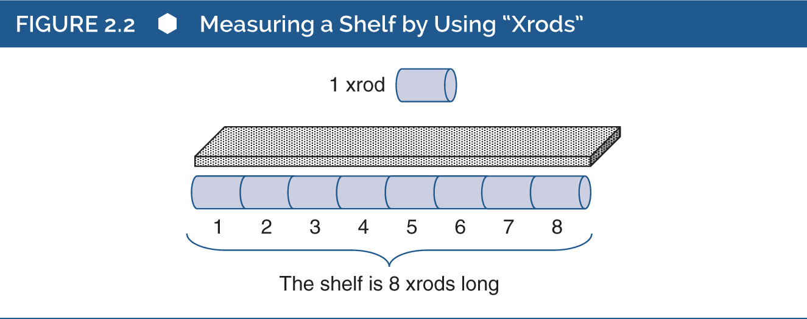

2 Шкалювання
Якщо щось існує, воно повинно існувати в певній кількості (Торндайк, 1918). Психологи зазвичай вважають, що люди мають психологічні характеристики, такі як думки, почуття, емоції, риси особистості, інтелект, стилі навчання тощо. Якщо ми приймаємо це, то ми маємо припустити, що кожна психологічна характеристика існує в певній кількості. Виходячи з цього, психологічне вимірювання можна розглядати як процес, у якому числові позначення присвоюються для представлення кількості психологічних характеристик. Процес вимірювання вважається успішним, якщо присвоєні числові позначення відображають реальні кількості цієї характеристики.
Стандартне визначення вимірювання (запозичене у Стівенса, 1946), яке зустрічається в більшості вступних текстів із тестування та вимірювання, звучить приблизно так: “Вимірювання — це присвоєння числових позначень об’єктам чи подіям згідно з певними правилами». У випадку психології, освіти та інших поведінкових наук”події”“, які нас цікавлять, зазвичай є зразками поведінки індивідів. «Правила», про які йдеться в цьому визначенні, зазвичай стосуються шкал вимірювання, запропонованих Стівенсом (1946).
Цей розділ присвячений шкалюванню, яке стосується способів присвоєння числових значень психологічним характеристикам. Шкалювання є фундаментальним питанням у вимірюванні і включає в себе різні аспекти. У цьому розділі обговорюється значення числових позначень, спосіб використання числових позначень для представлення психологічних характеристик, а також проблеми, пов’язані зі спробами поєднання психологічних характеристик із числовими позначеннями. Як зазначалося в попередньому розділі, психологічні тести призначені для вимірювання непомітних психологічних характеристик, таких як установки, риси особистості та інтелект. Такі характеристики створюють особливі проблеми для вимірювання, і цей розділ обговорює кілька можливих рішень цих проблем.
Ці питання, можливо, не викличуть вигуків захоплення та ентузіазму у деяких читачів або, можливо, у більшості читачів (а може, і взагалі ні в кого?); проте ці питання є фундаментальними для психологічного вимірювання, для вимірювання в цілому і для розвитку та застосування науки. Більш конкретно, вони важливі, оскільки допомагають визначити шкали вимірювання. Тобто вони допомагають розрізняти способи, за допомогою яких психологи застосовують числові значення у психологічному вимірюванні. У свою чергу, ці відмінності мають важливі наслідки для використання та інтерпретації результатів психологічних тестів. Те, як науковці та практики застосовують і трактують тести, значною мірою залежить від використовуваних шкал вимірювання. Вашу увагу до матеріалу цього розділу буде винагороджено новими ідеями щодо основ психологічного вимірювання та навіть щодо природи чисел.
Фундаментальні питання, пов’язані з числами
У психологічному вимірюванні числові позначення використовуються для представлення рівня психологічної характеристики індивіда. Наприклад, ваш числовий результат у тесті IQ використовується для відображення рівня вашого інтелекту, ваш числовий результат за Шкалою самооцінки Розенберга використовується для представлення рівня вашої самооцінки, а числове значення може навіть використовуватися для позначення вашої біологічної статі (наприклад, чоловіки можуть позначатися як «Група 0», а жінки — як «Група 1»). Таким чином, психологічне вимірювання сильно орієнтоване на числа і кількісне представлення.
Важливо зазначити, що числові позначення можуть представляти психологічні характеристики по-різному, залежно від природи числового позначення, яке використовується для характеристики. У цьому розділі описуються важливі властивості числових позначень і показується, як ці властивості впливають на способи представлення психологічних характеристик за допомогою чисел.
Як показано на рисунку 2.1, у цьому розділі викладено три важливі числові властивості, а також розглядається значення нуля. По суті, числові властивості ідентичності, порядку та кількості відображають способи, якими числові позначення можуть представляти потенційні відмінності у психологічних характеристиках. Крім того, нуль є надзвичайно складним числом, і ця складність має наслідки для розуміння різних типів результатів тестів. Наприклад, «результат» у вигляді нуля може мати абсолютно різні значення в різних контекстах вимірювання.
Властивість ідентичності
Найбільш фундаментальною формою вимірювання є здатність відображати «ідентичність проти відмінності». Справді, найпростіші психологічні вимірювання — це ті, які диференціюють між категоріями чи групами людей.
Наприклад, ви можете попросити вчителів першого класу визначити дітей у їхніх класах, які мають поведінкові проблеми. Діти, яких класифікують як таких, що мають поведінкові проблеми, повинні бути подібними один до одного з точки зору їхньої поведінки. Крім того, ці діти повинні відрізнятися від дітей, класифікованих як такі, що не мають поведінкових проблем. Тобто, особи в межах однієї категорії мають бути однаковими у сенсі спільної психологічної характеристики, але вони повинні відрізнятися від осіб з іншої категорії. У психології це передбачає, що людей потрібно розподілити щонайменше на дві категорії. Ідея полягає в тому, що об’єкти, події або люди можуть бути відсортовані за категоріями, які базуються на схожості характеристик. У багатьох випадках ці характеристики є поведінковими властивостями, що відображають психологічні атрибути, такі як «щасливий чи сумний», «інтроверт чи екстраверт» тощо.
При сортуванні людей за категоріями необхідно дотримуватися певних правил. Перше й найбільш очевидне правило полягає в тому, що для створення категорії люди в межах цієї категорії повинні задовольняти властивість ідентичності. Тобто всі люди в конкретній категорії повинні бути «ідентичними» з точки зору характеристики, яка відображається цією категорією. Наприклад, усі, хто входить до групи «поведінкові проблеми», повинні насправді мати поведінкові проблеми, а всі, хто входить до групи «без поведінкових проблем», не повинні мати таких проблем.
Друге правило полягає в тому, що категорії повинні бути взаємовиключними. Якщо людину класифіковано як таку, що має поведінкові проблеми, вона не може одночасно бути класифікована як така, що не має цих проблем.
Третє правило — категорії повинні бути вичерпними. Якщо ви вважаєте, що всіх першокласників можна класифікувати як таких, що мають поведінкові проблеми або не мають їх, то ці категорії є вичерпними. Якщо ж ви можете уявити когось, хто не може бути легко класифікований у ці категорії, то вам потрібно створити іншу категорію, яка охопить поведінку цієї людини. Підсумовуючи друге та третє правила, кожна людина повинна потрапляти лише в одну категорію.
Коли числові позначення мають лише властивість ідентичності, вони відображають ідентичність проти відмінності і слугують просто як мітки категорій. Категорії можуть бути позначені літерами, назвами або числовими позначеннями. Наприклад, ви можете назвати категорію дітей з поведінковими проблемами «Діти з поведінковими проблемами», можете назвати цю категорію «Категорія B» або призначити числове позначення для категорії. Наприклад, ви можете позначити цю групу як «0», «1» або «100».
Коли числові позначення мають лише властивість ідентичності, вони зазвичай не вважаються такими, що мають справжнє математичне значення. Наприклад, якщо «1» використовується для позначення категорії дітей з поведінковими проблемами, а «2» для позначення категорії дітей без поведінкових проблем, ми не будемо інтерпретувати очевидну різницю в 1 бал між числовими позначеннями як таку, що має кількісне значення.
Цей останній момент заслуговує на додаткове пояснення. При категоріальному розрізненні між людьми відмінності між категоріями відображають відмінності за видом або якістю, а не за кількістю. Знову звертаючись до класифікацій учителів щодо дітей, різниця між двома групами є відмінністю між типами дітей — тими, хто має поведінкові проблеми, і тими, хто не має. У цьому прикладі класифікація не призначена для відображення кількості проблем (наприклад, багато проти мало), а лише для відображення наявності або відсутності проблем. Таким чином, класифікація представляє дві якісно різні групи дітей.
Звісно, ви можете заперечити, що це досить грубий і неточний спосіб вимірювання або представлення поведінкових проблем. Ви можете припустити, що така характеристика точніше відображається в певному ступені, рівні або кількості, а не в простій категоризації за наявністю/відсутністю. Це приводить нас до додаткових властивостей числових позначень.
Властивість порядку
Хоча ідентичність є найбільш фундаментальною властивістю числових позначень, властивість порядку передає більше інформації. Як обговорювалося вище, коли числові позначення мають лише властивість ідентичності, вони передають інформацію про те, чи є двоє людей подібними або різними, але нічого більше. На відміну від цього, коли числові позначення мають властивість порядку, вони передають інформацію про відносну кількість характеристики, яку люди мають.
Коли числові позначення мають властивість порядку, вони вказують на ранговий порядок людей відносно один одного за певним виміром. У цьому випадку числове позначення 1 може бути присвоєно людині, яка володіє більшою кількістю певної характеристики, ніж будь-хто інший у групі. Числове позначення 2 може бути присвоєно людині, яка має наступну за величиною кількість цієї характеристики, і так далі.
Наприклад, вчителям можуть запропонувати оцінити дітей у їхніх класах за ступенем їхнього інтересу до навчання. Вчителям можуть дати інструкцію присвоїти числове позначення 1 дитині, яка демонструє найбільший інтерес до навчання, 2 — дитині, чий інтерес до навчання перевищує інтерес усіх інших дітей, за винятком першої дитини, і так далі, поки всі діти не будуть оцінені за рівнем їхнього інтересу до навчання.
Коли числові позначення використовуються для вказівки порядку, вони знову слугують, по суті, мітками. Наприклад, числове позначення 1 позначає людину, яка мала більше певної характеристики, ніж будь-хто інший у групі. Дитині з найбільшим інтересом до навчання було присвоєно числове позначення 1 як мітку, яка вказує на її ранг. Насправді ми могли б так само легко використовувати літери замість чисел для позначення рангів дітей. Дитина з найбільшим (або найменшим) інтересом до навчання могла б отримати літеру A для позначення її рангу. Кожна людина в групі отримує числове позначення (або літеру), яке вказує на її відносне становище в межах групи щодо певної характеристики. Для комунікації важливо, щоб значення символу, який використовується для позначення рангу, було чітко визначеним. Ми просто маємо знати, що означає 1 або A в кожному конкретному контексті.
Хоча властивість порядку передає більше інформації, ніж властивість ідентичності, вона все ще є досить обмеженою. Вона вказує на відносну величину відмінностей між людьми, але не повідомляє про фактичний ступінь цих відмінностей у характеристиці. Наприклад, базуючись на порядковій інформації, ми можемо знати, що дитина, яка займає 1-е місце, має більше інтересу до навчання, ніж дитина, яка займає 2-е місце, але ми не знаємо, наскільки більше інтересу має ця дитина. Дві дитини можуть відрізнятися одна від одної лише трохи у своєму інтересі до навчання, або ж вони можуть відрізнятися дуже сильно. Таким чином, коли числові позначення мають властивість порядку, вони все ще залишаються досить неточним способом представлення психологічних відмінностей.
Властивість кількіості
Хоча властивість порядку передає більше інформації, ніж властивість ідентичності, властивість кількості передає ще більше інформації. Як зазначалося вище, числові позначення, що мають властивість порядку, передають інформацію про те, хто з двох індивідів має вищий рівень певної психологічної характеристики, але вони не дають інформації про точну величину цієї характеристики. На відміну від цього, коли числові позначення мають властивість кількості, вони надають інформацію про величину відмінностей між людьми.
На цьому рівні числові позначення відображають дійсні числа або, у нашому контексті, просто числа. Число 1 використовується для визначення розміру базової одиниці на будь-якій конкретній шкалі. Усі інші значення на шкалі є кратними 1 або дробами 1. Кожне числове позначення (наприклад, число 4) представляє кількість базових одиниць.
Розгляньмо термометр, який ви можете використовувати для вимірювання температури. Щоб описати, наскільки тепла погода, ваш термометр відображає температуру в термінах «кількості градусів» (вище або нижче 0). Градус є одиницею вимірювання, а температура представляється у вигляді цієї одиниці.
Одиниці вимірювання — це стандартизовані величини; їхній розмір визначається відповідно до певної умовності. Наприклад, 1 градус Цельсія (1°C) визначається (первісно) як 1/100 різниці між температурою, за якої лід тане, і температурою, за якої вода кипить. Ми повернемося до цього важливого моменту трохи згодом.
Дійсні числа також вважаються неперервними. Теоретично будь-яке дійсне число можна поділити на нескінченно малі частини. У контексті вимірювання дійсні числа часто називають скалярними, метричними або кардинальними, а іноді просто кількісними значеннями.
Сила дійсних чисел полягає в тому, що їх можна використовувати для вимірювання кількості або величини характеристики об’єкта, людини чи події. Коли дійсне число застосовується до характеристики належним чином, воно вказує на кількість чогось. Наприклад, день із температурою 50°C є не просто теплішим за день із температурою 40°C; він є точно на 10 одиниць (тобто градусів) теплішим.
Коли психологи використовують психологічні тести для вимірювання психологічних характеристик, вони часто припускають, що результати тестів мають властивість кількості. Як ми побачимо пізніше, це припущення часто може бути необґрунтованим.
Число 0
Число 0 є незвичайним числом (див. Seife 2000), яке має принаймні два можливих значення. Щоб правильно інтерпретувати результат 0 у будь-якій конкретній ситуації, потрібно розуміти, яке значення є релевантним у цій ситуації.
В одному можливому значенні нуль відображає стан, у якому характеристика об’єкта чи події не існує. Якщо ви скажете, що об’єкт має довжину 0,0 см, це означатиме, що об’єкт не має довжини, принаймні в будь-якому звичайному сенсі цього слова. Нуль у цьому контексті називається абсолютним нулем. У психології найкращим прикладом поведінкового вимірювання з абсолютною точкою 0 може бути час реакції.
Друге можливе значення нуля — це його розгляд як довільної кількості характеристики. Такий нуль називається відносним або довільним нулем. У фізичному світі атрибути, такі як час (наприклад, календар, годинник) і температура, виміряна стандартними термометрами, є прикладами. У цих прикладах 0 — це просто довільна точка на шкалі, яка використовується для вимірювання цієї характеристики. Наприклад, температура 0 за шкалою Цельсія представляє точку танення льоду, але вона не відображає «відсутність» чогось (тобто не відображає відсутність температури або тепла).
Психологічний світ наповнений, принаймні потенційно, характеристиками, що мають відносну точку 0. Наприклад, важко уявити, що свідома людина могла б зовсім не мати (нуль) інтелекту, самооцінки, інтроверсії, соціальних навичок, установок тощо. Хоча ми неформально можемо сказати, що хтось «не має соціальних навичок», психологи формально не стверджували б цього — насправді ми вважаємо, що кожен має певний рівень соціальних навичок (а також самооцінки тощо), хоча деякі люди можуть мати набагато нижчий рівень, ніж інші.
Попри те, що більшість психологічних характеристик не мають абсолютної точки 0, психологічні тести таких характеристик можуть дати результат 0. У таких випадках нуль вважатиметься довільним і не буде по-справжньому відображати відсутність характеристики. Крім того, багато, якщо не більшість, результатів психологічних тестів можуть бути виражені у вигляді типу результату, який називається z-балом, що буде розглянуто у розділі 3. Z-бал 0 вказує на середній результат у наборі результатів. У цьому випадку нуль є довільним або відносним нулем.
У психології може виникати проблема у визначенні, чи слід розглядати результат тесту 0 як відносний чи абсолютний нуль. Ця проблема стосується різниці між тестом, що використовується для вимірювання психологічної характеристики, і самою психологічною характеристикою.
Розгляньмо приклад, який Торндайк (2005) використовував для ілюстрації цієї проблеми. Торндайк описує сценарій, у якому учень шостого класу проходить тест із правопису і не може правильно написати жодного слова. Учень отримує результат 0 за тестом. У цьому випадку тест із правопису є інструментом, що використовується для вимірювання характеристики учня — його здатності до правопису. Сам тест має абсолютну точку 0, яка вказує на те, що учень не написав жодного слова правильно. Однак важко уявити, що учень шостого класу взагалі не здатний до правопису; ймовірно, його здатність до правопису не дорівнює нулю. Тоді постає питання: як ми маємо трактувати результат тесту учня? Чи слід розглядати його як абсолютний нуль чи як відносний нуль?
Це важливо, тому що тип нуля, пов’язаний із тестом, впливає на те, як ми інтерпретуємо та використовуємо результати тесту. Наприклад, ми можемо планувати проведення статистичних аналізів результатів тестів для дослідження. Типи аналізів, які ми можемо проводити, частково визначаються типом нуля, що відображається у результатах тесту. З одного боку, якщо ми можемо припустити, що тест має абсолютну точку 0, то ми можемо впевнено виконувати арифметичні операції множення і ділення над результатами тесту. З іншого боку, якщо тест має відносну точку 0, то арифметичні операції з результатами слід обмежити додаванням і відніманням. З точки зору оцінювання, важливо знати, що означає нуль: чи означає це, що людина, яка отримала 0 за тестом, взагалі не мала характеристики, яку вимірювали, чи це означає, що вона могла не мати вимірюваної кількості цієї характеристики, принаймні не в рамках тесту, який використовувався для вимірювання?
Підсумовуючи, три властивості числових позначень і значення нуля є фундаментальними питаннями, які формують наше розуміння результатів психологічних тестів. Якщо двоє людей мають спільну психологічну характеристику, то ми встановили властивість ідентичності. Якщо двоє людей мають спільну характеристику, але одна людина має її більше, ніж інша, то ми можемо встановити порядок. Якщо порядок можна встановити, і якщо ми можемо визначити, наскільки більше однієї характеристики одна людина має порівняно з іншими, то ми встановили властивість кількості. Іншими словами, ідентичність є найбільш фундаментальним рівнем вимірювання. Щоб виміряти щось, спочатку потрібно встановити ідентичність цього «чогось». Як тільки ідентичність характеристики відома, можливо встановити порядок. Крім того, порядок є фундаментальною характеристикою кількості. Як ми побачимо, числа відіграють різну роль у представленні психологічних характеристик залежно від їхнього рівня вимірювання.
Більшість психологічних тестів вважаються такими, що надають числові результати, які володіють властивістю кількості. Наступні два розділи розглядають ключові питання щодо значення та використання таких кількісних результатів тестів. Зокрема, вони обговорюють значення «одиниці вимірювання», питання, пов’язані з підрахунком цих одиниць, та наслідки цих підрахунків.
Одиниці вимірювання
Властивість кількості вимагає чіткого визначення одиниць вимірювання. Як буде обговорено у наступному розділі, кількісне вимірювання залежить від нашої здатності підраховувати ці одиниці. Перш ніж обговорювати процес і наслідки підрахунку одиниць вимірювання, ми повинні уточнити, що мається на увазі під одиницею вимірювання.
У багатьох повсякденних випадках фізичного вимірювання одиниці вимірювання є добре знайомими. Наприклад, при вимірюванні довжини шматка деревини, ширини дивану або зросту дітей зазвичай використовують рулетку або лінійку, поділену на одиниці дюймів чи сантиметрів. Довжина, ширина і висота вимірюються підрахунком кількості таких одиниць від одного кінця деревини, дивану чи дитини до іншого.
На противагу цьому, у багатьох випадках психологічного вимірювання одиниці вимірювання часто є менш очевидними. Наприклад, при вимірюванні такої психологічної характеристики, як сором’язливість, робоча пам’ять, увага чи інтелект, що є одиницями вимірювання? Ймовірно, це відповіді певного роду, можливо, на серію запитань чи завдань. Але як ми можемо дізнатися, чи відповідають ці відповіді психологічним характеристикам самі по собі, і якщо так, то якою мірою? Ця книга повертається до цих питань пізніше, оскільки вони є одними з найскладніших проблем у психометрії. На даний момент зосередьмося на концепції одиниці вимірювання, що може бути проілюстровано в контексті вимірювання довжини фізичних об’єктів (Michell, 1990).
Уявіть, що ви будуєте книжкову полицю і вам потрібно виміряти довжину шматків деревини. На жаль, ви не можете знайти рулетку, лінійку чи будь-який інший вимірювальний інструмент — як ви можете точно виміряти довжину своїх шматків деревини?
Одне з рішень — створити власну унікальну систему вимірювання. Уявіть, що ви знайшли довгу дерев’яну шторну рейку, яка залишилася від попереднього проєкту. Ви відрізаєте невеликий шматок цієї рейки і називаєте його «xrod» (див. рисунок 2.2).
Оскільки ваші шматки деревини для полиць довші за xrod, вам знадобиться кілька таких «xrod». Ви можете використовувати цей оригінальний xrod як шаблон для виготовлення колекції ідентичних xrod. Тобто, ви можете відрізати додаткові шматки з тієї самої шторної рейки, переконавшись, що кожен xrod має точно таку ж довжину, як і оригінал. Тепер ви можете використовувати свої xrod для вимірювання довжини всіх шматків деревини. Наприклад, щоб виміряти довжину однієї з полиць, покладіть один xrod на один кінець деревини, яку ви будете використовувати як полицю. Потім, як показано на рисунку 2.2, викладіть xrod кінець до кінця в одну лінію, поки не досягнете протилежного кінця деревини. Підрахуйте кількість xrod, і, можливо, ви знайдете, що полиця має довжину «8 xrod».

Ви щойно виміряли довжину в «одиницях xrod». Тепер ви можете використовувати свій набір xrod для вимірювання довжини кожного шматка деревини, який вам потрібен. Насправді, ви могли б використовувати xrod для вимірювання довжини багатьох речей, а не лише шматків деревини. У багатьох аспектах ваше вимірювання є настільки ж корисним, як і будь-яке інше вимірювання довжини (за винятком того, що тільки ви знаєте, що таке xrod!).
Довільність є важливою концепцією для розуміння одиниць вимірювання і дозволяє розрізняти різні типи вимірювальних одиниць. Існує три способи, у яких одиниця вимірювання може бути довільною.
По-перше, розмір одиниці може бути довільним. Розгляньмо ваш xrod — розмір вашого оригінального xrod міг бути будь-якої довжини. Коли ви відрізали цей перший xrod, ваше рішення про його довжину могло бути повністю довільним — не було «істинної» довжини xrod, яку ви намагалися отримати. Ви просто вибрали довжину для відрізання, і ця довжина стала «офіційною» довжиною xrod. У цьому сенсі розмір вашої одиниці вимірювання, xrod, був повністю довільним. Подібно до цього, кількість ваги, яку представляє «фунт», є довільною величиною. Хоча зараз існує чіткий консенсус щодо точного значення ваги, яке представляє фунт, ми можемо запитати, чому фунт має відображати саме цю конкретну величину. Початковий вибір, ймовірно, був досить довільним.
По-друге, деякі одиниці вимірювання не пов’язані з якимось одним конкретним типом об’єкта. Тобто, може не бути жодного внутрішнього обмеження щодо об’єктів, до яких може бути застосована одиниця вимірювання. Ваші xrod можна використовувати для вимірювання просторових вимірів будь-чого, що має просторовий вимір. Наприклад, їх можна використовувати для вимірювання довжини шматка деревини, довжини столу, відстані між двома об’єктами або глибини води в басейні. Аналогічно, фунт можна використовувати для вимірювання ваги багатьох різних об’єктів.
По-третє, коли одиниці вимірювання мають фізичну форму, вони можуть бути використані для вимірювання різних характеристик об’єктів. Наприклад, xrod, який ми використовували для вимірювання довжини шматка деревини, також можна було б використовувати як одиницю ваги. Уявіть, що вам потрібно виміряти вагу мішка з фруктами. Якщо у вас є ваги, ви можете покласти мішок у одну корзину ваг, а xrod поступово скласти в іншу корзину. Коли дві сторони ваг «збалансуються», ви знатимете, що мішок фруктів важить, наприклад, «4 xrod».
Деякі одиниці вимірювання, які називаються стандартними мірами, є довільними за всіма трьома зазначеними способами, коли вони набувають фізичної форми. У фізичному вимірюванні стандартними одиницями є такі одиниці, як фунти, літри й мілісекунди. Той факт, що вони виражені у довільних одиницях, надає їм гнучкість і універсальність. Наприклад, ви можете використовувати мілісекунди для вимірювання всього — від часу реакції людини на подію до часу, необхідного автомобілю для проїзду вулицею.
На відміну від багатьох фізичних мір, більшість психологічних одиниць вимірювання (наприклад, результати тестів здібностей або тестів інтелекту) зазвичай є довільними лише у першому сенсі цього терміну. Тобто більшість психологічних одиниць вимірювання є довільними за розміром, але зазвичай вони прив’язані до конкретних об’єктів або вимірів. Наприклад, «одиниця» вимірювання в тесті IQ пов’язана певним чином із інтелектом і не може бути застосована до інших вимірів. Через цю особливість результатів тестів IQ ми називаємо одиниці вимірювання тестів IQ «балами IQ»; ці бали не мають референтів поза межами тесту, який використовується для вимірювання інтелекту. Винятком з цього є випадки, коли стандартні міри використовуються для вимірювання психологічних характеристик. Наприклад, час реакції часто використовується для вимірювання різних когнітивних процесів.
Адитивність і підрахунок
Необхідність підрахунку є центральною для всіх видів вимірювання. Незалежно від того, вимірюємо ми характеристику фізичного світу чи психологічного, усі вимірювання включають підрахунок.
Наприклад, коли ви використовували xrod для вимірювання довжини шматка деревини, ви розміщували xrod кінець до кінця, починаючи з одного кінця деревини і продовжуючи, поки не досягали іншого кінця. Потім ви підраховували xrod, щоб визначити довжину об’єкта. Отриманий результат підрахунку був мірою довжини.
Аналогічно, коли ви використовуєте процедуру поведінкового дослідження (тобто тест) для вимірювання рівня самооцінки людини, ви підраховуєте відповіді певного типу. Наприклад, ви можете підрахувати кількість тверджень у тесті, які респондент позначає як «правда», і інтерпретувати кількість позначок «правда» як показник рівня самооцінки респондента. Тобто ви підраховуєте одиниці, щоб отримати результат вашого вимірювання.
Адитивність
Важливо, що процес підрахунку як аспект вимірювання включає ключове припущення, яке може бути недійсним у багатьох випадках психологічного вимірювання. Це припущення полягає в тому, що розмір одиниці залишається незмінним — усі одиниці, які підраховуються, є ідентичними. Іншими словами, адитивність вимагає, щоб розмір одиниці залишався постійним; приріст одиниці на одному етапі процесу вимірювання має бути таким самим, як приріст одиниці на будь-якому іншому етапі.
Згадайте знову приклад із xrod, коли ви використовували оригінальний xrod як зразок для виготовлення додаткових xrod — вам потрібно було «переконатися, що кожен xrod має точно таку ж довжину, як ваш оригінальний xrod». Таким чином ви забезпечили, що щоразу, коли ви розміщуєте xrod один за одним і рахуєте їх, ви можете довіряти, що ваш підрахунок точно відображає довжину. Наприклад, якщо ви виготовили 10 xrod, і вони всі ідентичні, тоді не має значення, які саме xrod ви використовуєте для вимірювання довжини деревини. Тобто шматок деревини, довжину якого ви виміряли як 5 xrod, буде виміряний як 5 xrod незалежно від того, які саме 5 xrod ви використаєте.
Тепер уявіть, що замість колекції однакових за довжиною xrod ваші xrod мають різну довжину. У такому випадку, якщо ви вимірюєте той самий шматок деревини двічі, ви можете отримати два різні результати, які вказують на різну довжину! Наприклад, якщо деякі xrod довші за інші, тоді ваш шматок деревини може бути 5 xrod, коли ви використовуєте коротші xrod, але лише 3 xrod, якщо ви використовуєте довші xrod. Оскільки ваші xrod відрізняються за розміром, немає єдиної величини довжини, яку представляє xrod. Таким чином, ваші одиниці не є постійними, і вся ваша система вимірювання є хибною. Це унеможливить точне вимірювання довжини деревини.
Крім того, розмір одиниці вимірювання не повинен змінюватися залежно від умов вимірювання. Наприклад, розмір xrod повинен залишатися постійним незалежно від того, в який час доби xrod використовується для вимірювання шматка деревини. Фактично, ви хочете, щоб ваше вимірювання залежало лише від однієї характеристики того, що ви вимірюєте, незалежно від умов, які існують у час і місці вимірювання. Ця умова називається спільним вимірюванням (Luce & Tukey, 1964) і є складним питанням, яке виходить за межі цієї книги (див., однак, Green & Rao, 1971, для чіткого, нетехнічного обговорення).
Хоча ці проблеми можуть бути найбільш зрозумілими у випадку фізичних вимірювань (наприклад, xrod), нас цікавлять психологічні вимірювання. Тож тепер уявіть, що ви вчитель історії, який хоче виміряти таку психологічну характеристику, як «знання американської історії». Це часто робиться шляхом постановки учням запитань, які, на вашу думку, діагностують їхні знання, і запису їхніх відповідей. Тимчасово розрізняймо одиниці вимірювання та психологічні одиниці. Тобто кожен тестовий пункт є одиницею вимірювання, і ви знову підраховуєте правильно відповіді, щоб отримати результат, який ви інтерпретуєте як знання учня з американської історії. У той час як психологічні одиниці ми будемо грубо й неформально визначати як «справжній» рівень знань.
Ідеально було б, якби одиниці вимірювання відповідали психологічним одиницям. Тобто ми використовуємо результати тестів для представлення рівнів психологічних характеристик. Зважаючи на це, ви комбінуєте відповіді кожного учня на тест певним чином (наприклад, підраховуючи кількість правильних відповідей) і створюєте загальний бал, який інтерпретується як міра справжнього знання з американської історії.
Уявімо, що одне із запитань вашого тесту було «Хто був першим президентом США?» і ще одне — «Хто був першим європейцем, що приплив у П’юджет-Саунд?» Очевидно, що кількість знань з американської історії, необхідних для правильної відповіді на перше запитання, значно менша, ніж для другої. У термінах психологічних одиниць припустімо, що для відповіді на перше запитання потрібно лише 1 психологічна одиниця знань з американської історії, але для відповіді на друге — у три рази більше (тобто 3 психологічні одиниці).
Розгляньмо учня, який правильно відповів на обидва запитання. У термінах справжнього знання цей учень мав би 4 психологічні одиниці знань з історії. Однак у термінах вимірювання цей учень отримав би лише 2 бали. Тобто, якщо ви просто підсумуєте кількість правильних відповідей, щоб отримати загальний бал, учень отримає 2 бали. Це припускало б, що людина має 2 одиниці знань з американської історії, тоді як насправді вона має 4 одиниці знань.
Ця невідповідність виникає через те, що одиниці вимірювання не є постійними щодо характеристики, яку вони відображають. Тобто відповіді на запитання не відображають однакових за розміром одиниць знань — для відповіді на перше запитання потрібно менше знань, ніж для другого. Таким чином, адитивний підрахунок правильних відповідей не є доброю мірою фактичного рівня знань. З психологічної точки зору часто припускають, що психологічна характеристика, така як знання з американської історії, насправді існує в певній кількості. Однак, на відміну від шматка деревини, довжина якого може бути безпосередньо спостережуваною, ми не можемо безпосередньо спостерігати «знання з американської історії». У результаті ми не можемо просто перевірити, чи відповідає кількість запитань з історії, на які відповіли, фактичному рівню знань з історії, який має певна людина.
Це створює певний парадокс: ми хочемо перекласти кількість психологічної характеристики у набір чисел для її вимірювання. Але здається, що це неможливо зробити, оскільки ми не знаємо, скільки цієї характеристики насправді існує. Ця напруга частково лежить в основі процесу валідації тесту (див. розділи 8 і 9). Цей процес здебільшого базується на постійній взаємодії між теорією характеристики та емпіричними даними, зібраними про цю характеристику.
Підрахунок: коли він є вимірюванням?
Хоча всі вимірювання спираються на підрахунок, не всі форми підрахунку є формами вимірювання. Справді, суперечка щодо зв’язку між підрахунком і вимірюванням виникає тоді, коли ми рахуємо об’єкти, а не характеристики (Lord & Novick, 1968; Michell, 1986; Wright, 1997). Наприклад, якщо ви рахуєте кількість виделок на столі, чи ви «вимірюєте» щось? Або якщо ви рахуєте кількість дітей у класі, чи є це вимірюванням?
Деякі експерти стверджують, що простий підрахунок кількості певного типу об’єкта не є «вимірюванням». Вони вважають, що підрахунок може вважатися вимірюванням лише тоді, коли він використовується для відображення кількості певної характеристики або властивості об’єкта. Наприклад, якщо фізик використовує лічильник Гейгера для підрахунку радіоактивних випромінювань об’єкта, то він вимірює радіоактивність об’єкта, де «радіоактивність» є характеристикою цього об’єкта. Аналогічно, якщо професор рахує кількість правильних відповідей, які студент дав на тест із математичних завдань із множинним вибором, то професор може вимірювати рівень математичних знань студента, де «рівень математичних знань» є психологічною характеристикою цього студента.
Чотири шкали вимірювання
Як було зазначено раніше, вимірювання включає присвоєння чисел спостереженням таким чином, щоб числа відображали реальні відмінності, які існують між рівнями певної психологічної характеристики. Шкалювання є конкретним способом, яким числа пов’язуються з поведінковими спостереженнями для створення міри (Allen & Yen, 1979; Crocker & Algina, 1986; Guilford, 1954; Magnusson, 1967).
Насправді визначення шкалювання є спірним. З одного боку, деякі експерти можуть вважати визначення шкалювання в цій книзі занадто ліберальним і обмежувати його лише присвоєнням чисел, які мають, щонайменше, властивість порядку (Magnusson, 1967; McDonald, 1999). З іншого боку, деякі експерти можуть віддати перевагу ще більш обмеженому визначенню, яке вимагає використання скалярів (Wright, 1997). Це ще одна суперечка в літературі про вимірювання, яка не буде вирішена тут. Варто зазначити, що для деяких авторів терміни «шкалювання» і «вимірювання» є синонімами (Bartholomew, 1996).
У відомій класифікації Стівенс (1946) визначив чотири рівні вимірювання. Згідно зі стандартним визначенням вимірювання, присвоєння чисел спостереженням поведінки є «регламентованим правилами». У більшості випадків ці «правила» стосуються шкал вимірювання, запропонованих Стівенсом (1946, 1951). Шкали вимірювання Стівенса є «правилами» в тому сенсі, що вони вказують, як певні властивості числових позначень можуть бути пов’язані з певними типами поведінкових спостережень, які асоціюються з психологічними характеристиками. У таблиці 2.1 інтегруються ці рівні вимірювання з основними числовими властивостями, описаними раніше.
Номінальні шкали
Найбільш фундаментальним рівнем вимірювання є номінальна шкала. У номінальній шкалі числові позначення, які мають властивість тотожності, використовуються для позначення спостережень, у яких поведінка була розсортована за категоріями відповідно до певної психологічної характеристики. Наприклад, ми можемо «виміряти» біологічну стать, розсортовуючи людей на дві категорії — чоловіки та жінки, позначені як Група 0 і Група 1 відповідно. Аналогічно, як було описано раніше, дітей у класі можна розсортувати в групи на основі наявності або відсутності поведінкових проблем, де числове позначення 1 ідентифікує дітей із поведінковими проблемами, а числове позначення 2 — дітей без поведінкових проблем. За умови, що ми можемо бути впевненими, що групи є взаємовиключними та вичерпними, нашою єдиною турботою є здатність правильно розсортувати дітей за групами.
Важливо розрізняти мітки номінальної шкали, як у наведеному вище прикладі, від міток, які використовуються для ідентифікації або найменування індивідів. Мітки номінальної шкали використовуються для позначення груп людей, які мають спільну характеристику, якої немає в людей з інших груп. У протилежність цьому числові позначення, які використовуються для ідентифікації індивідів, такі як номери соціального страхування, зазвичай не призначені для встановлення приналежності до групи. Однак відмінність може бути розмитою, коли числові позначення присвоюються індивідам у певний систематичний спосіб. Наприклад, людей можна розсортувати в групи відповідно до року їхнього народження, а номери на футболках окремих гравців можуть використовуватися для диференціації людей, які грають на різних позиціях у команді (див. Lord, 1953, для дотепного обговорення цієї проблеми). Важливим моментом є те, що при використанні числових позначень для ідентифікації людей потрібно чітко розуміти свій намір. Тобто ви використовуєте числові позначення для визначення групової приналежності (як у випадку номінального рівня вимірювання) чи як мітки, що, по суті, слугують іменами для індивідів?
Таблиця 2.1: Зв’язок між числовими принципами та рівнями вимірювання
| Principle | Level of Measurement | Nominal | Ordinal | Interval | Ratio |
|---|---|---|---|---|---|
| Identity | X | X | X | X | |
| Order | X | X | X | ||
| Quantity | X | X | |||
| Absolute zero | X |
Порядкові шкали
Як випливає з назви, порядкова шкала визначає вимірювання за допомогою числових позначень, які мають властивість порядку. Тобто порядкові шкали створюють ранги, у яких люди розташовуються відповідно до кількості певної характеристики, якою вони володіють. Наприклад, членів спортивної команди можна ранжувати за їхньою атлетичністю. Тренери команди можуть створити ці ранги, базуючись на своїх власних судженнях щодо атлетичності кожного члена команди. Гравцеві, якого вважають найбільш атлетичним, може бути присвоєно числове позначення 1, наступному за рівнем атлетичності — числове позначення 2, і так далі.
Як описувалося раніше, числові позначення в цьому сенсі є просто мітками, які вказують на відносне положення людей щодо рівнів характеристики, що вимірюється (наприклад, атлетичності). Однак немає спроби визначити, скільки саме цієї характеристики має кожна людина. Числові позначення просто вказують, що одна людина має більше або менше цієї характеристики, ніж інша.
Хоча цей рівень вимірювання передає більше інформації, ніж номінальний рівень, він все ж обмежений. Уявімо дві різні спортивні команди: одна складається з професійних спортсменів, а інша — зі школярів-спортсменів. Гравців у кожній команді ранжують за їхньою атлетичністю відповідно до оцінок їхніх тренерів. Кожного професійного спортсмена ранжують порівняно з іншими професіоналами, а кожного школяра — порівняно з іншими учнями. Найбільш атлетичному професійному спортсмену та найбільш атлетичному школяреві тренери присвоюють рейтинг «1». Їхні «бали» показують, що ці двоє людей є найатлетичнішими членами своїх команд, але той факт, що обидва отримали «1» у рейтингах атлетичності, очевидно, не означає, що вони однаково атлетичні. Звісно, ми не повинні робити висновок, що найбільш атлетичний школяр такий же атлетичний, як і найбільш атлетичний професійний спортсмен. Такі кількісні порівняння потребували б вимірювання, яке має властивість кількості.
Інтервальні шкали
Властивість кількості характеризує дві останні шкали вимірювання. Тобто як інтервальні, так і шкали відношень базуються на числах, які представляють кількісні відмінності між людьми за кількістю характеристики, що вимірюється. Однак відмінність між цими двома шкалами головним чином стосується значення нуля.
Інтервальні шкали мають довільний нуль. Як зазначалося раніше, температура, виражена в градусах Цельсія (або Фаренгейта), є класичним прикладом характеристики (температури), виміряної за інтервальною шкалою. Температура 0°C (або 0°F) є довільною, оскільки вона не відображає відсутності будь-якої характеристики. Це не є повною відсутністю тепла.
У інтервальних шкалах розмір одиниці вимірювання є постійним і адитивним, але шкала не дозволяє інтерпретацій множення. Наприклад, ви можете додати 2° до 40° і отримати 42°, або додати 2° до 80° і отримати 82°. У кожному випадку зміна на 2° на термометрі представляє таку саму зміну в кількості тепла. Тобто кількість тепла, необхідна для підвищення температури з 40 до 42°C, є такою ж, як і для підвищення з 80 до 82°C. Це означає, що розмір одиниць на шкалі Цельсія є адитивним і постійним. Однак не коректно інтерпретувати температуру 80°F як таку, що має «вдвічі більше тепла» або є «вдвічі теплішою», ніж 40°F. У цьому сенсі множення (і ділення) одиниць шкали Цельсія не дає змістовних результатів у термінах співвідношень «кількості тепла».
Як буде обговорено пізніше, багато психологічних тестів використовуються та інтерпретуються так, ніби вони базуються на інтервальній шкалі вимірювання. Наприклад, переважна більшість тестів інтелекту, тестів особистості, тестів успішності, тестів розвитку та багатьох інших видів психологічних оцінок розглядаються так, ніби вони є інтервальними шкалами. Припускаючи, що результати тестів мають властивість кількості і що одиниці вимірювання мають постійну величину, користувачі тестів можуть робити багато дослідницьких та практичних застосувань результатів тестів.
На жаль, згідно з багатьма експертами з вимірювання, лише деякі психологічні тести дійсно дають результати інтервального рівня (Ghiselli et al., 1981). Результати, отримані з деяких відомих академічних тестів, таких як SAT і American College Testing (ACT), ймовірно, є інтервальними шкалами. Однак стверджується, що результати переважної більшості психологічних тестів насправді не є інтервальними шкалами. Ми повернемося до наслідків цієї проблеми пізніше.
Шкали відношень
На відміну від інтервальних шкал із довільною точкою нуля, шкали відношень мають абсолютну точку нуля. Наприклад, вимірювання фізичної відстані є шкалами відношень. Ми можемо вимірювати відстань між двома об’єктами і виявити, що ця відстань дорівнює 0. У такому випадку нуль вказує на справжню «відсутність відстані». Тобто нуль означає відсутність характеристики, яка вимірюється.
Шкали відношень вважаються «вищим» рівнем вимірювання, ніж інтервальні, порядкові та номінальні шкали, оскільки вони надають більше інформації і дозволяють робити більш складні висновки. Зокрема, шкали відношень дозволяють як адитивність, так і множинні інтерпретації в термінах співвідношень. Наприклад, коректно інтерпретувати відстань у 80 миль як «удвічі більшу», ніж відстань у 40 миль.
Це важливе питання має наслідки для наших інтерпретацій відмінностей між об’єктами. У прикладних налаштуваннях шкала відношень дозволила б користувачу тесту зробити такі заяви, як «Психіатричний пацієнт A є вдвічі більш психічно хворим, ніж пацієнт B». У дослідницьких налаштуваннях шкала відношень дозволила б дослідникам інтерпретувати результати певних статистичних процедур у термінах характеристик, які вимірюються.
Згідно з більшістю експертів із тестування, ймовірно, немає психологічних тестів, які дають дані рівня шкали відношень. Це може здивувати тих, хто знайомий зі спробами виміряти психологічні характеристики за допомогою стандартних мір. Наприклад, час реакції (вимірюваний у мілісекундах) є поширеною формою вимірювання в когнітивній психології і стає дедалі популярнішим у інших сферах психології. Стандартні міри, такі як «час у мілісекундах», є вимірюваннями рівня шкали відношень.
Чому ж деякі експерти стверджують, що немає психологічних тестів рівня шкали відношень? Згадайте, що шкали відношень мають абсолютну точку нуля. Проте невелике обмірковування показує, що неможливо, щоб людина відповіла на що-небудь за 0 секунд (або мілісекунд). Вимірювальний прилад — наприклад, секундомір — має абсолютну точку нуля, але час реакції людини ніколи не може дорівнювати нулю. Це не означає, що вимірювання часу реакції є поганим способом оцінки психологічних процесів. Насправді, час реакції може бути найбільш природним способом вимірювання розумової діяльності (Jensen, 2005). Суть у тому, що користувачі тестів повинні розрізняти нуль, пов’язаний із вимірювальним приладом, і нуль, пов’язаний із психологічною характеристикою, яка вимірюється. Хоча вимірювальний прилад може мати абсолютну точку нуля, це не означає, що психологічна характеристика, яка вимірюється, має абсолютну точку нуля (Blanton & Jaccard, 2006).
Шкали вимірювання: практичне застосування
Як зазначалося раніше, шкала вимірювання тесту може мати важливі наслідки. Серед дослідників поведінки широко прийнято вважати, що це питання може впливати на змістовність певних форм статистичного аналізу. Тобто стверджується, що деякі з найпоширеніших, базових і добре відомих статистичних процедур слід використовувати лише з вимірюваннями інтервального або шкали відношень, але не з номінальними або порядковими вимірюваннями.
Шкала вимірювання змінної має важливі наслідки для змістовності певних описових статистик, таких як середнє значення або кореляція (див. розділ 3). Розгляньмо конкретний приклад: номінальну змінну, таку як колір волосся. Припустімо, у нас є вибірка з 20 учасників, і ми класифікуємо кожного з них за кольором волосся: Група 1 = блондини (13 учасників), Група 2 = чорняві (4 учасники) і Група 3 = шатени (3 учасники). Якщо ми використовуємо ці числа для обчислення «середнього кольору волосся», ми отримаємо значення 1,5:
\[ \frac{1 + 1 + 1 + 1 + 1 + 1 + 1 + 1 + 1 + 1 + 1 + 1 + 1 + 2 + 2 + 2 + 2 + 3 + 3 + 3}{20} = 1.5 \]
Хоча математично можливо обчислити середнє значення для номінальної змінної, питання в тому, чи є це змістовним. Що саме означає «середній колір волосся» і, головне, що означає значення 1,5 у цьому контексті? Чи означає це, що середній колір волосся є чимось середнім між блондинистим і чорнявим, оскільки 1,5 знаходиться між 1 і 2 (з цими значеннями, що представляють блондини і чорняві в цьому контексті)? Ще гірше, ми могли б вибрати інший спосіб категоризації груп: Група 1 = чорняві (4 учасники), Група 2 = шатени (3 учасники), Група 3 = блондини (13 учасників). Це було б абсолютно коректно, оскільки числа тут (для номінальної шкали) є просто мітками. Однак у цьому випадку середнє значення дорівнювало б 2,45, і знову — що це означало б у цьому контексті? Тепер середній колір волосся виглядає як щось середнє між шатеном і блондином. Наше значення «середнього кольору волосся» змінюється залежно від довільного вибору чисел, які ми використовуємо для представлення кольору волосся. Це проблема.
Сподіваюся, цей приклад демонструє, що змістовність певних описових статистичних понять може сильно залежати від шкали вимірювання. Деякі описові статистичні концепти просто не є дуже змістовними, якщо їх застосовувати до результатів, заснованих на певних шкалах вимірювання.
На відміну від відносно зрозумілої ситуації з описовою статистикою, є значні суперечки щодо того, чи мають шкали вимірювання чіткі наслідки для використання параметричної статистики (такої як t-тести чи дисперсійний аналіз, які, можливо, вам знайомі). З одного боку, багато підручників зі статистики та дослідників заявляють або вважають, що параметричні статистичні процедури є коректними лише для інтервальних або шкал відношень. Наприклад, Коен (Cohen, 2001) стверджує, що «параметрична статистика є дійсно валідною лише тоді, коли ви маєте справу з інтервальними/шкалами відношень» (с. 7).
З іншого боку, багато експертів відкидають цю точку зору. Наприклад, Ховелл (Howell, 1997) зазначає, що «основна шкала вимірювання не є критичною для вибору статистичних методів» (с. 8). Ще більш різко, Гайто (Gaito, 1980) припускає, що ті, хто вважає, що шкалювання має прямі наслідки для коректності параметричних (на противагу непараметричним) процедур, «очевидно, не читають літературу зі статистики, оскільки низка статей з цього питання чітко показала, що шкали вимірювання не пов’язані зі статистичними методами» (с. 564). Відображаючи такі розбіжності, Максвелл і Делані (Maxwell & Delaney, 2004) визнають, що «рівень вимірювання залишається спірним фактором, який може або не може впливати на вибір між параметричними і непараметричними підходами» (с. 143).
Незважаючи на неоднозначності та суперечки, дослідники поведінки зазвичай розглядають більшість тестів і вимірювань як такі, що мають інтервальний рівень. Особливо для агрегованих результатів, отриманих із багатопунктових шкал, дослідники припускають, що результати є «достатньо» інтервального рівня. Для дуже коротких або одноелементних шкал це припущення є менш обґрунтованим. У таких випадках дослідникам слід або розглянути альтернативні аналітичні стратегії, або визнати потенційну проблему.
Додаткові питання щодо шкал вимірювань
Правила Стівенса для присвоєння символів, включно з числами, поведінковим спостереженням, які використовуються в тестах, слід розглядати як евристичні інструменти, а не як остаточні та вичерпні. Насправді інші автори пропонували додаткові рівні вимірювання з відповідними правилами для створення шкал. Наприклад, Кумбс (Coombs, 1950) виступає за рівень вимірювання між номінальним і порядковим рівнями, а також між порядковим і інтервальним рівнями. Аналогічно, Мостеллер і Тьюкі (Mosteller & Tukey, 1977) пропонують набір із шести типів шкал, а Мітчелл (Michell, 1986) припускає, що, за деякими визначеннями, лише інтервальні та шкали відношень можна вважати «вимірюваннями».
Більше того, підрахунок можна розглядати як окремий рівень вимірювання, і коли він використовується для кількісної оцінки психологічної характеристики, його можна вважати вимірюванням з абсолютною точкою нуля і фіксованою недовільною одиницею вимірювання (число 1). Ми зосередили нашу дискусію на рамках Стівенса, оскільки це найпоширеніша така структура, яка надає розумну основу для розуміння ключових питань, пов’язаних із психометрією.
Інший момент полягає в тому, що, хоча їх часто використовують для відображення номінальних шкал, дихотомічні змінні, яким присвоєно бінарні коди (наприклад, 0 і 1), іноді можуть розглядатися як такі, що продукують дані інтервального рівня. Якщо є підстави вважати, що дискретні дихотомічні категорії були створені на основі якоїсь прихованої кількісної психологічної характеристики, тоді бінарні коди мають усі властивості, пов’язані з кількістю.
Наприклад, уявіть, що у вас є міра депресії. Ви проводите тест для великої групи людей і сортуєте людей у дві категорії на основі їхніх результатів — тих, хто страждає від депресії, і тих, хто не страждає. Якщо ви присвоїте числові коди цим категоріям, то ці числа можуть розглядатися як такі, що відображають відмінності в кількості депресії у людей у двох категоріях. У цьому випадку значення можуть бути концептуалізовані на інтервальній шкалі.
З іншого боку, якщо сортування в категорії не базується на кількісній характеристиці, тоді немає сенсу вважати, що коди мають кількісні властивості. Наприклад, у випадку, коли людей сортують у категорії на основі того, чи вживали вони нелегальні наркотики, коди не мають кількісного значення.
Технічний додаток. Синтаксис R
Вставити текст додатку
Резюме
У цьому розділі були розглянуті різноманітні важливі теоретичні питання, спрямовані на окреслення основ психологічного вимірювання. Основною метою шкалювання в контексті цієї книги є зв’язок числових значень із психологічними характеристиками людей. Як описано у цьому розділі, фундаментальні питання шкалювання стосуються:
А) Зв’язку між спостереженнями поведінки та числовими символами. Б) Ступеня, до якого цей зв’язок відображає реальні відмінності між поведінками, що спостерігаються.
Процедури шкалювання психологічних характеристик стикаються з викликами, які частково виникають через те, що психологічні характеристики (наприклад, риси, здібності, навички, установки) не є безпосередньо спостережуваними. Тому психологи часто покладаються на некількісні методи вимірювання або просто припускають, що кількісні моделі вимірювання працюють досить добре для наближення кількості психологічних характеристик.
Попри це, усі процедури психологічного шкалювання мають одну спільну рису — вони призначені для представлення відмінностей між людьми. Наступний розділ обговорює статистичні концепції, які використовуються для кількісної оцінки цих індивідуальних відмінностей.